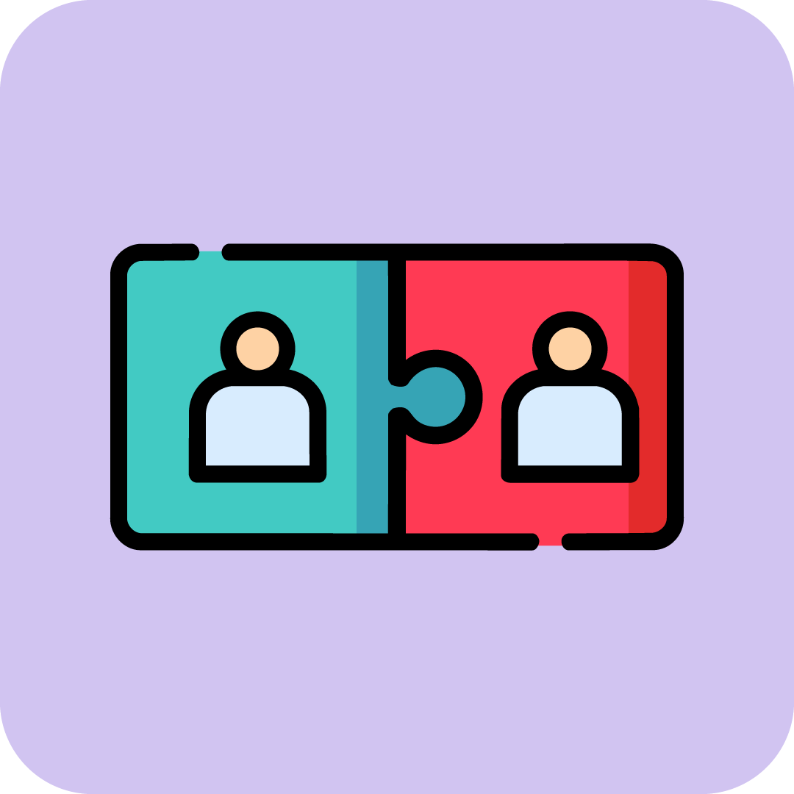
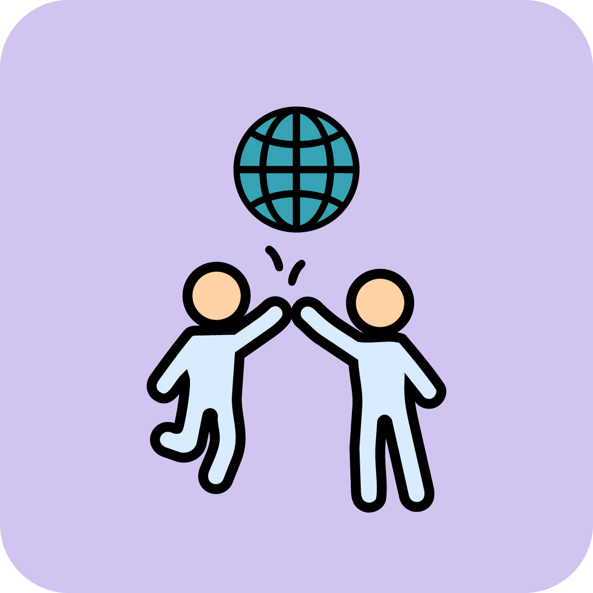

Match Making
Managed by selected filters, matching your preferences study style, our service provides alternatives for you to limit and expand your confidence.
We proudly offer high-quality study sessions tailored specifically to meet the diverse needs of students. Presented below are three distinctive services, each designed to provide a variety of study session formats that align with your individual preferences and availability.
Each portal features advanced filtering options, enabling you to easily connect with peers or groups whose study habits, schedules, and goals closely match your own. This personalised approach not only maximises your productivity and focus but also fosters meaningful networking opportunities. As you engage in these collaborative environments, you’ll have the chance to build lasting friendships, enriching both your academic journey and social experience.
Our platform is committed to creating an inclusive and supportive community where students can thrive together, combining flexibility with structure to accommodate every learning style and schedule.

Managed by selected filters, matching your preferences study style, our service provides alternatives for you to limit and expand your confidence.

An opportunity for students to gain new work experience and challenge their knowledge with the right set of academic study groups.

We partner with local institutions and universities to support students and build a stronger studying and academic community.